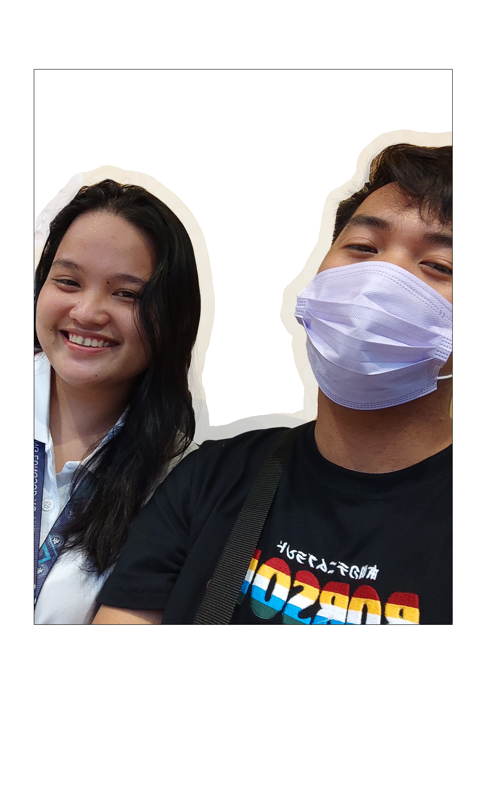

Date, do you remember our first date. I got asked for help, she wanted me to help her
find some phone for her. Then I asked you, to come with me. And we ended up just eating Jollibee together. I honestly can’t
believe that I managed to pull that off. And the day before that, when you wait for my class to be done. It was honestly the
biggest step for me. It was the biggest leap of faith I’ve ever done in my life. I’m pretty sure, if we met days before. I’d
be too scared to even ask you na sabay na tayong umuwi. I’d be too scared to even ask. It is honestly the best leap decision
I’ve ever done and I regret nothing of it because now, I found you.
Also that time at valentine’s day. With our first bracelet. The poem. What is it
again?
"You and I Versal"
Nakatutuwang isipin na sa iyong tiyaga
ay tumitibay ang mundo nating dalawa.
Ikaw ang gumagabay sa panahong walang-wala.
Kaya't sa iyo ibibigay, ang regalong maganda.
Buwan
At sa iyong mga yugto, minsan ay komplikado,
aking ipapangakong, paliliwanagin ang mga ngiti mo.
Pangangalagaan ang mundo sa init ng yakap ko, pangako.
Lahat ng ito, upang matupad ay pagsisikapakan ko
Araw-araw.
Bagamat hindi man nakasulat sa mga tali,
hindi man laging may bahaghari.
Ang pagsuot nito ay nagsasabi,
"Ikaw at ako, ay iibig para sa ating
Mundo."
It was a once in a lifetime day, because we can’t truly have dates at schools at all.
Regardless, it was honestly one of the best days for me. I love spending my time with you.
And also our first big date. The museum date with a bit of spice. The museum on
itself is really fun for me. We learned that some people just really won’t get art and that’s because they are us. WHAHHAHAA.
Anyways, I’m excited to spend more time, with you. And excited for our future dates.
I really hope na makahanap na talaga ako ng clients so we can have some spending money for them. I’ll do my best tangi. I love
you sobrang sobra.
P.s. Extra message, I am glad na we’re back together again. I’m really having a hard
time without you. And I think this is a good time to somewhat reminisce about our past. Obviously I wrote this before the
circumstances. Regardless, I’m really happy na you came back to me and the tests were positive and that, you feel calmer now.
I love you sobrang sobra.